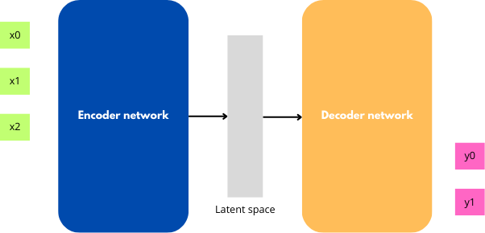

Variationnal Auto Encoder (VAE) - Part 1
In recent articles about image generation, the state-of-art seems to be accomplished by a model named ``Variationnal Auto Encoder``.
To understand this model we need to go further in two keys concept : ``Variationnal Inference`` (VI) and ``Auto Encoder`` (AE).
Context
Let's consider a dataset $\mathcal{D}$ of images. We denote by $x$ a unique sample of $\mathcal{D}$.
We aim to build a model which is able to generate new images, images outside of $\mathcal{D}$.
In order to do generation we need to get $p^*(x)$ (the ``marginal likelihood`` or ``model evidence``), the true distribution of the data. However we have only one dataset $\mathcal{D}$, we don't have all possible data.
Thus, we approximate $p^*(x)$ with $p_\theta(x)$. In order to optimize $\theta$, we need to differentiate the function $p_\theta$ (to find the maximum marginal likelihood).
However, $p_\theta(x)$ is an intractable integral.
We try to use a second variables $z$ (from a latent space $Z$) and the ``Bayes rule`` to solve this issue :
$$p_\theta(x)=\frac {p_\theta(z,x)}{p(z|x)}$$
Good news : $p_\theta(z,x)$ is tractable.
Bad news : $p_\theta(z|x)$ is untractable.
The final idea is to approach $p_\theta(z|x)$ with optimization methods (Variationnal Inference) then to construct a model which use this approached distribution (Variational Auto-Encoder).
I. Variational Inference (VI)
`Variationnal Inference` is a branch of statistic which try to approach an unkonwn distribution from known distributions $\{q_{\phi}\}$. A way to approach the unknown distribution is for example by adjusting $\phi$, known distrbution's parameter.
For example if you want to approximate a given distribution by using a Gaussian family. You have to set correctly $\mu$ and $\sigma$ until your gaussian distribution $q_{\mu,\sigma}$ is similar to the target distibution.

To start a Variational Inference it is necessary to get :
1. A familly of parameterized known distributions $\{q_{\phi}\}$.
2. A metric to compare how far we are of the unkown distibution.
To explore these notions further, you can read VI : a review for statisticians.
General formulation of VI problem and ELBO
A natural metric to compare the divergence between two distibution $p$ and $q$ is the ``Kullback-Leiber divergence`` KL :
$\textbf{KL(p||q)}=\int_\Omega q(\omega).\log{\frac{p(\omega)}{q(\omega)}}$ where $\Omega$ is the definition set of p and q.
In order to estimate a posterior, we have data $x \in \mathcal D$.
We consider a latent space $Z$.
Then we choose distribution family $\mathcal Q$ for $q_\phi(z|x)$(the approximate posterior).
As a result, a ``Variational Inference`` (VI) problem with ``KL-divergence`` as a metric is formulated as :
$$ \argmin_{q_\phi\in \mathcal Q} \textbf{KL}(q_\phi(z|x)||p_\theta(z|x))$$
With expectation manipulations and Bayes rule the ``KL`` become :
$\textbf{KL}(q_\phi(z|x)||p_\theta(z|x))=$$\mathbb{E_{q_\phi(z|x)}}(\log{p_\theta(x|z)}.p_\theta(z))-\mathbb{E_{q_\phi(z|x)}}(\log{q_\phi(x|z)})$+$\log{p_\theta(x)}$
$\textbf{KL}(q_\phi(z|x)||p_\theta(z|x))=$-$\textbf{ELBO}$+$\log{p_\theta(x)}$
Maximise the red box is equivalent to minimize the ``KL``.
This quantity, in the red box, is the ``ELBO`` (Evidence Lower Bound).
$$\textbf{ELBO}=\mathbb{E_{q_\phi(z|x)}}(\log{q_\phi(z|x)})-\mathbb{E_{q_\phi(z|x)}}(\log{p_\theta(x|z)}.p_\theta(z))$$
Another form for the ELBO, more suited to machine learning formulation, is :
$$\textbf{ELBO} = \mathbb{E_{q_\phi(z|x)}}(\log{p_\theta(x|z)})-\textbf{KL}(q_\phi(z|x)||p_\theta(z))$$
We named this quantity ``ELBO`` because it is the lower-bound of the integral $\log{p_\theta(x)}$ :
$$\log(p_\theta(x)) \geq \textbf{ELBO}$$
Moreover, we have an unbiased estimator of the ``ELBO`` with ``Monte-Carlo mathod``, since the ``ELBO`` is an expectation.
To conclude, a Variational Inference problem can be writen as the argmax of the ``ELBO``: $$\argmax_{\theta,\phi}\mathbb{E_{q_\phi(z|x)}}(\log{q_\phi(z|x)})-\mathbb{E_{q_\phi(z|x)}}(\log{p_\theta(x|z)}.p_\theta(z))$$
How to maximize the ELBO ? CAVI : Coordinate Ascent VI
The basic algorithm to maximize ``ELBO`` and find the approximate distribution $q$ is ``Coordinate Ascent VI`` (CAVI) algorithm.
In order to compute at d-dimensions case, ``CAVI`` makes an assumption on distribution.
We suppose that each dimension are independent i.e : $q=\Pi_{i=1}^d q_j(z_j)$
This is the ``Mean-Field approximation``.
The CAVI algorithm suggests to calculate the optimal distribution of direction $j$ only by fixing other variables along their direction.
It is possible to demonstrate that, under the KL as metric, the optimal distribution $q_{\phi}(z_j)$ (distribution which maximize ``ELBO``) in for direction $j$ is proportionnal to $\exp(\mathbb{E}_{-j}p_\theta(z,x)])$, where $\mathbb{E_{-j}}$ is the expectation w.r.t of $q_{1,2,.,j-1,j+1,.n}$
For mathematic details you can check the Meerkat Statistic's course about VI.
Here is the algorithm :
Init : Set parameters randomly.
1. Calculate all optimal distributions $q(z_j)$. Note that the form of $q(z_j)$ depends of the form $q(z_i)$.
2. Compute the ``ELBO``.
Then loop these steps until $|\textbf{ELBO}_t - \textbf{ELBO}_{t-1}| \lt \epsilon$.
From Gradient Ascent VI and Normal Gradient to BBVI
Note that, since the aim is to find the best $(\theta, \phi)$ by maximizing ``ELBO``, it is sometimes possible to compute the gradient of the ELBO and to proceed at the optimization of $(\theta, \phi)$ similarly to a gradient descent.
$$\theta^{t} = \theta^{t-1}+\alpha^t.\nabla_\theta\textbf{ELBO} \\
\phi^{t} = \phi^{t-1}+\alpha^t.\nabla_\phi\textbf{ELBO}$$
This method is called Gradient Ascent VI.
But is the gradient really a good metric to compare distributions ?
The gradient (and derivative in general) are defined naturally from an euclidiean distance.
Here it is an euclidiean distance in the space of the parameters.
Let's look at an example.

Visually the first two distributions are similar, while the two others are barely overlapping.
However the canonic euclidean distance with the respect of $\mu$ says the inverse.
The Euclidean gradient is sometimes not well adapted to VI.
The solution : Natural Gradient, a Riemanian gradient
The solution, as explained in this paper, is to define a gradient in a Riemanian space with a symetric version of the KL.
This solution is also discussed in the Stochastic VI paper.
This gradient is named the ``Natural Gradient`` : $\nabla^{\text{natural}}=\mathcal{I}^{-1}(q).\nabla$.
It is the product of the inverse of the ``Fischer matrix`` and the original gradient.
As a result, we define the ``Natural Gradient Ascent VI``, which uses the normal gradient in its formula.
$$\theta^{t} = \theta^{t-1}+\alpha^t.\nabla_\theta^{\text{natural}}\textbf{ELBO}\\
\phi^{t} = \phi^{t-1}+\alpha^t.\nabla_\phi^{\text{natural}}\textbf{ELBO} $$
Here a resume of VI method to get posterior distribution from the ELBO :

How to compute ELBO gradients ? Is there a trick ?
Just like in Gradient Ascent VI, the Normal Gradient is easy to compute with an exponential family, but if we aim to approximate distributions using complex models, the calculations become more difficult.
The difficulty comes from of the derivation of the integral (since expectation is an integral) for the gradient w.r.t $\phi$ : $$\nabla_\phi \textbf{ELBO} = \nabla_\phi \mathbb{E}_{q_\phi(z|x)}(\log{q_\phi(z|x)}-\log{p_\theta(x|z)}.p_\theta(z))$$
To simplify the computation we use the ``log-derivative trick``.
It can be shown that : $$\nabla_\phi \textbf{ELBO} = \mathbb{E}_{q_\phi(z|x)}(\log{p_\theta(x|z)}.p_\theta(z)-\log{q_\phi(z|x)}).\nabla_\phi \log{q_\phi(z|x)}]$$
With this trick, the gradient is applied only to $\log{q(z)}$.
Then the gradient is computed with the ``Monte-Carlo method`` from sample of $q(z)$. This calculation is feasible because at a fixed time, $q(z)$ is known.
To conclude the ELBO's gradient w.r.t $\phi$ takes the following approximation in a general case : $$\nabla_\phi \textbf{ELBO}(x^k) \approx \frac 1 S \sum_i{(\log{p_\theta(x^k|z_i)}.p_\theta(z_i)-\log{q_\phi(z_i|x^k)}).\nabla_\phi \log{q_\phi(z_i|x^k)}} \\ z_i \sim q $$
This formula provides a stochastic approximation of the gradient. We will see that this kind of stochastic approaches can be extanded to improve VI.
Finaly, to compute the ELBO's gradient w.r.t of $\theta$, we only have to put the gradient on the expectation :
$$\nabla_\theta\textbf{ELBO}(x^k)\approx-\sum_i\nabla_\theta [\log p_\theta(x^k,z_i)] $$
Stochastic VI and Limitations of classic VI algorithms
The main issue with classic VI is that for each substep and iteration, we need to go through the entire dataset.
A natural improvement would be to use ``mini-batches``, thus introducing stochastic behavior.
As a result, we adapt ``Coordinate Ascent VI`` (CAVI) ``Gandradient Ascent VI`` in their stochastic versions, meaning the same algorithms, but using mini-batches instead of the full dataset.
If you are not familiar with mini-batches methods you can check this link.
This opens the door to ``Stochastic Variational Inference``, with more scalable and better suited to large dataset algorithms.

Black-Box Variational Inference - BBVI :
If we combine the idea of ``mini-batches`` with the stochastic approximation of the gradient, we can develop a comprhensive method of Stochastic Variational Inference, which operates on complex models and without requiring the mean-field assomption : ``Black Box VI``.
You can read the original paper here : BBVI.
The BBVI optimizes the ``ELBO`` with the following algorithm :
1. Set a statistic model and a choose a familly distribution for $q_\phi(z|x)$. Start with a radom $\phi$ and a random $\theta$.
2. Sample $\{z_i\}$ from $q_\phi(z|x)$
3. Use the ``log-derivative trick`` and ``Monte-Carlo method`` to estimate the gradient : $$\nabla_\phi \textbf{ELBO}(x^k) \approx \frac 1 S \sum_i{(\log{p_\theta(x^k|z_i)}.p_\theta(z_i)-\log{q_\phi(z_i|x^k)}).\nabla_\phi \log{q_\phi(z_i|x^k)}}\\
\nabla_\theta\textbf{ELBO}(x^k)\approx-\sum_i\nabla_\theta \log p_\theta(x^k,z_i)]$$
4. Construct ``mini-batches`` with your dataset and refresh the $\theta$ with : $$\theta^{t} = \theta^{t-1}+\alpha^t.\nabla_\theta\textbf{ELBO} \\
\phi^{t} = \phi^{t-1}+\alpha^t.\nabla_\phi\textbf{ELBO}$$
However, the flexibility of this method comes with a high variance.
Thus the paper provides solutions like ``Rao-Blackwellization`` or control variates methods. The last one is introduced in this [paper.
You can read the BBVI paper to see updated algorithms.
Conclusion about VI
To conclude, we have seen that ``Variational Inference`` comes from with algorithm to approximate posterior distribution. These algorithms considers this approximation as an optimization problem. The function to optimize is the ``Evidence Lower Bound`` (ELBO).
However, with large datasets ``VI`` algorithms are too complex.
Moreover, gradient-based algorithms requires strong assumption which are not always appropriate.
Thus ``Variational Inference`` became ``Stochastic Variational Inference`` where algorithm like ``BBVI`` performs in despite of a high variance.
We will see in the third part of this article that this technology is today at the center of the generative AI. The key is to use an Auto-Encoder architecture and train it to the ``Variational Inference`` with the same idea that ``BBVI``.
II. Auto-Encoder
``Auto-Encoder`` is a neural network architecture which is a particular case of ``Encoder-decoder``.
Encoder-decoder architectures are today at the state-of-the-art of main challenges in deep learning.
Let's do a quick recap of these architectures.
From Encoder-Decoder to Auto-Encoder
The ``Encoder-Decoder`` are neural networks adapt to sequence-to-sequence problem. There a made of two parts :
1. ``Encoder`` : takes the input and builds a fixed-size representation of this (called an ``embedding``) in a latent space. The objective is to capture the essential informations.
2. ``Decoder`` : takes the embedding as an input and infers an ouput step by step from it.

For example if we have an image of $28$x$28$ px with a circle.
The image can be compressed in a 3D vector : a center position and a radius. This is the effect of the ``encoder``.
Then from these latent variables it is possible to infer informations like if the circle is greater than an area. This is the effect of the ``decoder``.
The ``Auto-Encoder`` is exactly an encoder-decoder except that the objective is to regenerate the ``encoder`` input $x$.
If I give to the model $x$ as input, I want to get back $x$ as output of the decoder.
In the example of the image circle, the ``decoder`` has to generate a circle with the appropriate radius and center position.
It seems useless in a first look. However with this idea it is possible to do task like :
1. Image reconstruction
2. Image denoising
3. Learning compression
For example for document compression : the document $d$ is passed to the ``encoder``.
At this stage, we have a version of the document but in the ``latent space``.
Since the ``encoder`` retains only key informations from the document, it is now compressed.
The decoder is able to reconstruct the document using the ``auto-encoder`` principle : the ``encoder`` input is the ``decoder`` ouput.
Is it possible to generate data once the latent space build ?
Let's consider an ``auto-encoder`` trained to image reconstruction. It has a ``latent space`` $Z$.
What if we take a random point $z \in Z$ and pass it to the decoder to generate an image ?
The produced image will not be coherent at all because the ``latent space`` generated by an ``auto-encoder`` is desorganized.
This is true even if we choose a $z_0$ point near a $z_1$ point which represent a real coherent image.

Indeed, except if the $z$ point is on a point from the dataset, there is no reason that the $z$ point is a coherent image.
To conclude, if we want to make data generation, we aime to build an organized and continous latent space.
III. Variational Auto-Encoder (VAE)
`Variational Auto-Encoder` (VAE) are an improvement of ``auto-encoder`` with the help of ``Stochastic Variational Inference``.
We train them by forcing the latent space to approach a fixed distribution using variationnal inference methods. Thus the latent space is more continus and organized.
We modelize the VAE and the data as follow :

1. The input dataset $\mathcal{D}$ and the corresponding image in the latent space $\mathcal{D'}$
2. $p_\theta(x)$ the modelized distribution of the dataset image in the input space and $p_\theta(z)$ the modelized distribution of the latent data in the latent space.
3. $p_\theta(z|x)$ the distribution which maps the input space into the latent space and $p_\theta(x|z)$ which maps the latent space into the output space.
Using the same notations, we denote with a $$ : $p^(x)$, $p^*(z)$, the true distributions.
We try to approach the $p_\theta(z|x)$ with a $q_\theta(z|x)$ with variational inference method : we want to maximize the ELBO.
The VAE paper brings a trick to compute the ELBO gradient without a high variance, the ``reparametrization trick``. Thus, the training algorithm is slighly different than ``BBVI``. (see paper).
Reparametrization trick
The issue is, as for BBVI, the gradient w.r.t of $\phi$.
Indeed we have : $$
\nabla_\theta\textbf{ELBO}(x^k)\approx-\frac 1 S \sum_i\nabla_\theta [\log p_\theta(x^k,z_i)]\\
\nabla_\phi\textbf{ELBO}(x^k) = \mathbb{E_{q_\phi(z|x^k)}} [\nabla_\phi[\log(p_\theta(z,x^k))-\log{q_\phi(z|x^k)}]] + \int_z(\log(p_\theta(z,x^k))-\log{q_\phi(z|x^k)}).\nabla_\phi q_\phi(z|x^k)$$
The gradient w.r.t of $\phi$ is not expressed as an expectation and is intractable because of the stochasticity.
Thus, we introduce a differentiable transformation which sperates the stochastic behavior out of the gradient.
$$z \leftarrow T(\epsilon, \phi)\\
\epsilon \sim \mathcal p(\epsilon)$$

This trick allows us to write the expectation w.r.t $p(\epsilon)$ and then to apply ```Monte-carlo estimator`` to the ELBO's gradient :
$\nabla_\phi\textbf{ELBO}(x^k) \approx \frac 1 S\sum_i \nabla_\phi\log{q_\phi(z_i|x^k)} $
Training VAE in practice
Now we know how to compute gradient of the ELBO with the ``reparametrization trick``.
The idea of VAE is to construct the latent space by considering the encoder and decoder functions like probability distributions.
It is then possible to construct the latent space with variational inference.
The loss function of the network is the ELBO rewriten in its appropriate machine learning form : $$\textbf{ELBO} = \mathbb{E_{q_\phi(z|x)}}(\log{p_\theta(x|z)})-\textbf{KL}(q_\phi(z|x)||p_\theta(z))$$
We have to set 3 distributions : $p_\theta(z)$ the distribution of the latent space, $p_\theta(x|z)$ the likelihood (or here the decoder distribution) and $q_\phi(x|z)$ the approximate posterior (or here the encoder distribution).
Choice of $p_\theta(z)$ for the training :
Once $p_\theta(z)$ set, the latent data will be distribiuted under this distribution.
We want a continuous space so the natural choise is to choose $p_\theta(z) \sim \mathcal N(0,1)$.

Choice of $q_\phi(z|x)$ for the training:
Since $p_\theta(z)$ is a gaussian, we will have an analytical solution for the $\textbf{KL}(q_\phi(z|x)||p_\theta(z))$ term if we choose $q_\phi(z|x) \sim \mathcal{N(z|\mu(x),\sigma^2(x))}$.
As a consequence we have with calculus : $$\textbf{KL}(q_\phi(z|x)||p_\theta(z)) = -\frac 1 2(\log\sigma^2-\mu^2-\sigma^2+1)$$
Choice of $p_\theta(x|z)$ for the training :
This distribution will determine the ouput distribution. It depends on what type of images we have.
For example if our dataset is MNIST, we will choose a Bernoulli distribution. However if our dataset is Iris dataset, we will choose a continous natural distribution like a gaussian.
For this article we will choose a gaussian : $p_\theta(x|z) \sim \mathcal N(y_\mu, y_\sigma^2)$.
To reduce variance in the output we set $y_\sigma=1$.
Thus, the expectation term in the ELBO loss function became : $$\mathbb{E_{q_\phi(z|x)}}(\log{p_\theta(x|z)})=-\log\sqrt(2\pi)-(x-y_\mu)^2$$
Up to an additive constant $$\mathbb{E_{q_\phi(z|x)}}(\log{p_\theta(x|z)})=(x-y_\mu)^2$$
Amortized Variational Inference
Rather than considering the distribution $q_\phi$ as the output of the encoder, we consider parameters like $\mu$ and $\sigma$ as the output of the encoder.
The encoder became a function $f$ which maps data $x$ with $(\mu, \sigma)$.
The advantage is that we don't need to recompute the map $x \rightarrow (\mu, \sigma)$ when we add new samples to the batch.
This method is called ``amortized variational inference``.
We do the same for the decoder.
Thus, the expectation term in the ELBO loss function become deterministic and is the MSE loss between the original data and the expectation of $p_\theta(x|z)$.
As a consequence a VAE is an encoder-decoder model where the encoder learns $\mu$ and $\sigma$ and decoder learns $y_\mu$.
These parameters are learnt through a dataset $\mathcal D$ and the ELBO loss function :
$$\mathcal L(x^k, \mu,\sigma,y_\mu) = -\frac 1 2(\log\sigma^2-\mu^2-\sigma^2+1) + (x-y_\mu)^2$$
The gradient is computed with the reparametrization trick and then is updated with an optimizer on parameters of distributions

This training produces a latent space continous and organized in comparison of the classic auto-encoders.
Limits of VAE
With the theory above, it seems that VAE are perfect to generate images. They have a continous and well-organized latent space, so why do they face challenges in practice ?
Here a sample of faces generated by VAEs :
 All the images are blurry. Why ?
An explanation is that the ELBO loss function is unblanced between **KL** divergence, which try to fit latent space to a normal distribution, and ``reconstruction loss`` like MSE.
Due to the stochasticity of the latent space during the training, one sample could produce a distribution of slighlty different $z$. Due to this difference, reconstruction loss try to average the difference. This is a mathematic model for bluriness.
Thus, the model underfit sharper details.
All the images are blurry. Why ?
An explanation is that the ELBO loss function is unblanced between **KL** divergence, which try to fit latent space to a normal distribution, and ``reconstruction loss`` like MSE.
Due to the stochasticity of the latent space during the training, one sample could produce a distribution of slighlty different $z$. Due to this difference, reconstruction loss try to average the difference. This is a mathematic model for bluriness.
Thus, the model underfit sharper details.